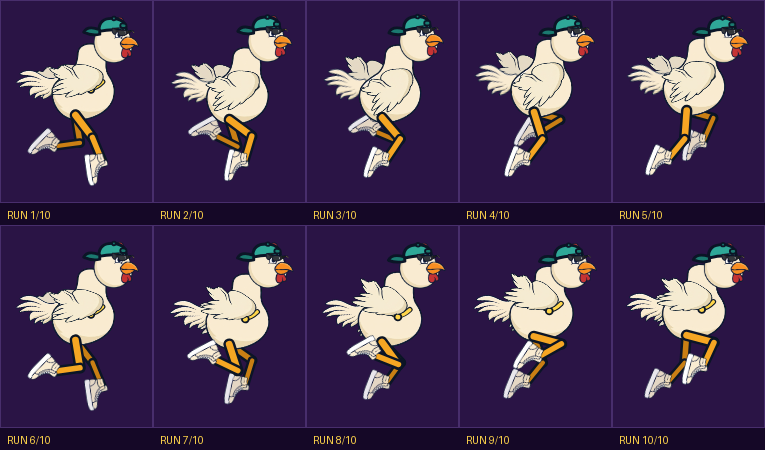
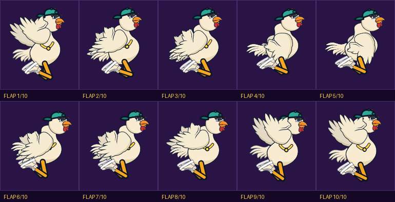
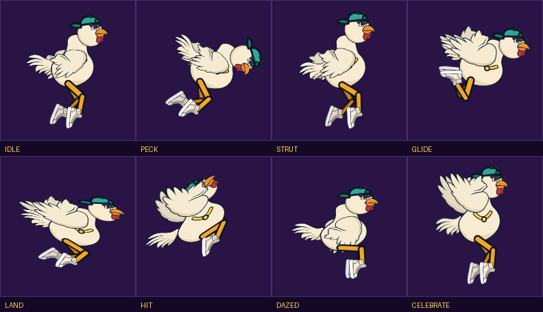
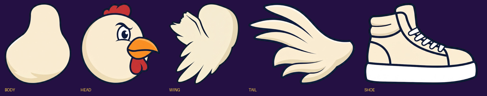
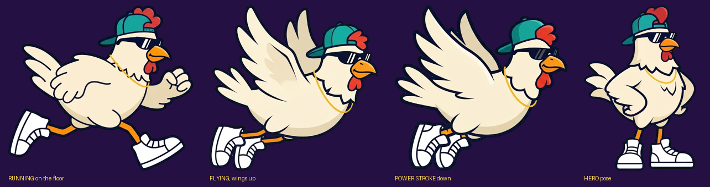

10 FRAMES · FULL STRIDE CYCLE
His feet are solved with inverse kinematics, so they plant on the ground and push off instead of skating. His wings pump for balance, out of phase with the legs, and his head stays locked in space while the body pumps underneath it — which is what real chickens do.

SWIPE SIDEWAYS ON A PHONE
10 FRAMES · ONE WINGBEAT
The timing is deliberately uneven: the power stroke fires in about a tenth of the cycle and the recovery takes almost four times as long. That asymmetry is what makes a wingbeat read as effort rather than a wobble. The body pumps, the head hangs back off the pump, and the tail follows.

SWIPE SIDEWAYS ON A PHONE
8 STATES
Idle and the two menu beats, plus gliding with wings held out, the landing squash, the moment of impact, dazed on the ground, and celebrating a new best.

5 PIECES · GENERATED ONCE
Every frame above is these five painted pieces, hung on the animation rig and moved by it. That is why the frames finally look like the reference: they are the reference art, not a code imitation of it. Generating each piece once also means no drift — the character cannot wobble between frames the way generated sprite sheets do.

The look these frames are built toward — designs 1 and 2 fused: backwards cap, shades, gold chain.
